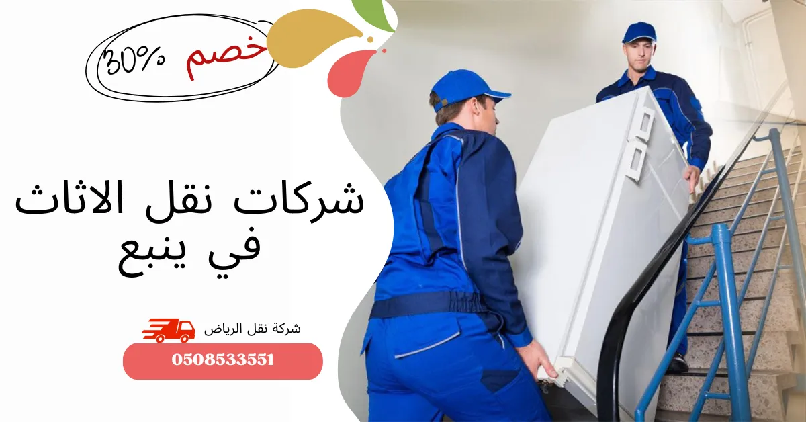

شركات نقل الاثاث في ينبع

تعتبر شركات نقل الاثاث في ينبع من الحلول المثالية لعملية نقل آمنة وفعالة للمنازل والمكاتب، حيث تقدم هذه الشركات خدمات متكاملة، فـ هي تشمل التعبئة والتغليف والنقل، مما يوفر للعميل راحة البال ويضمن الحفاظ على الأثاث من أي ضرر، كما تتميز الشركات المحترفة بتقديم خدمات نقل عفش مرنة تتناسب مع احتياجات العميل، من خلال توفير فرق مدربة ومتخصصة في هذا المجال لضمان النقل السلس والآمن.
شركات نقل الاثاث في ينبع
عند التفكير في نقل أثاث منزلك سواء في ينبع أو النقل بين المدن السعودية عليك أن تبحث جيدًا عن أفضل شركات نقل الاثاث في ينبع، والتي تعد من الخيارات الموثوقة والمهمة لأفراد وعائلات المدينة الذين يحتاجون إلى نقل أثاثهم من مكان لآخر، كما توفر هذه الشركات خدمات شاملة تبدأ من التعبئة والتغليف، وصولاً إلى النقل الآمن للأثاث إلى الوجهة المطلوبة، بالإضافة إلى أنها تقدم العديد من خدمات النقل بأسعار مناسبة وباحترافية عالية، مما يساهم في جعل العملية أكثر سلاسة وأقل توترًا، كما أن فرق العمل المدربة تضم أفرادًا قادرين على التعامل مع جميع أنواع الأثاث، سواء كان من الخشب أو الزجاج أو المعدن، بما يضمن الحفاظ على سلامته خلال الرحلة.
من أهم المميزات التي توفرها شركات نقل الاثاث في ينبع هي استخدام مواد تغليف عالية الجودة مثل الورق المقوى والفوم، التي تحمي الأثاث من التلف أثناء النقل بالإضافة إلى ذلك، توفر بعض الشركات خدمات مرنة تتيح للعميل تحديد موعد النقل بما يتناسب مع جدوله الشخصي، كما أن العديد من الشركات تقدم خدمات إضافية مثل فك وتركيب الأثاث، مما يسهل العملية بشكل كبير من خلال اختيار شركة نقل محترفة، يمكنك أن تضمن أن أثاثك سيصل بأمان ودون أي مشاكل.
مميزات خدمة شركات نقل الاثاث في ينبع
تتميز خدمات شركات نقل الاثاث في ينبع بتوفير العديد من المزايا، التي تجعلها الاختيار الاول دائمًا من أبرز هذه المزايا، هي تقديم خدمات تأمين على الأثاث خلال عملية النقل مما يضمن حماية أكبر لجميع القطع كما تلتزم الشركات المحترفة بمواعيد التسليم، بحيث يتسلم العميل الأثاث في الوقت المحدد دون تأخير، وتعتبر الأسعار التنافسية من بين العوامل التي تجعل هذه الخدمات مفضلة لدى العديد من العملاء، حيث تقدم خصومات 50%.
افضل شركة نقل عفش بينبع
تعد شركة نقل الرياض واحدة من أفضل شركات نقل العفش في ينبع حيث تتميز بتقديم خدمات احترافية وشاملة لنقل الأثاث بكل دقة وأمان، كما تحرص الشركة على ضمان تجربة نقل مريحة للعملاء من خلال توفير فرق عمل مدربة على أعلى مستوى، قادرة على التعامل مع جميع أنواع الأثاث بحرفية كبيرة، كما تستخدم نقل الرياض أحدث تقنيات التعبئة والتغليف لضمان حماية الأثاث من أي ضرر أثناء عملية النقل.
بالإضافة إلى ذلك توفر الشركة خدمات صيانة فك وتركيب الأثاث بكل سلاسة، مما يساهم في توفير الوقت والجهد على العملاء، كما أن الأسعار التي تقدمها الشركة تنافسية ومعقولة مقارنة بالجودة العالية للخدمات المقدمة، حيث يمكن لعملاء شركات نقل الاثاث في ينبع الاعتماد على هذه الشركة التي تلتزم بتسليم الأثاث في الوقت المحدد وبأقصى درجات الأمان.
نقل عفش ينبع حراج
عند التفكير في نقل العفش من ينبع إلى حراج أو العكس، يعتبر اختيار شركة نقل عفش محترفة أمرًا مهم للغاية لضمان الحفاظ على الأثاث وحمايته أثناء العملية، كما أن شركات النقل الموثوقة توفر الأيدي العاملة المدربة التي تتعامل مع الأثاث بحذر واحترافية، كما تقدم خدمات تغليف عالية الجودة للحفاظ على سلامة القطع أثناء النقل، يمكن أن يؤثر النقل غير المتقن على الأثاث بشكل كبير، لذلك من المهم أن تختار الشركة التي تضمن لك عملية نقل آمنة وسلسة.
كيفية نقل العفش بين ينبع وحراج
تتطلب عملية نقل العفش بين ينبع وحراج تنظيمًا دقيقًا لضمان نقل آمن وفعال، حيث يبدأ النقل بتفكيك الأثاث كما يتولى الفريق المحترف تفكيك القطع الكبيرة مثل الأسرة والخزائن باستخدام أدوات خاصة، ثم يتم تغليف كل قطعة بعناية باستخدام مواد مقاومة للتلف مثل الفوم أو البطانات الواقية، بعد التغليف يتم تحميل الأثاث في سيارات النقل الخاصة التي تتسم بالمساحات الكبيرة لتفادي أي ضغط أو ضرر أثناء الرحلة، في الوجهة الجديدة حيث يقوم الفريق بإعادة تركيب الأثاث بكل احترافية وترتيبه كما كان في البداية.
نصائح شركات نقل الاثاث في ينبع
عند نقل العفش من الضروري أن تتبع بعض النصائح لتسهيل العملية اولاً، يجب التأكد من أن كل القطع محمية بشكل جيد باستخدام مواد التغليف المناسبة، كما يفضل أن يتم ترتيب القطع داخل السيارة بطريقة تمنع احتكاك الأثاث ببعضه البعض كذلك، يفضل تجنب تحميل الأثاث بشكل مفرط داخل الشاحنات لتفادي أي ضغط يمكن أن يتسبب في تلفها أثناء الرحلة.
نقل عفش من ينبع الى جدة
يتطلب نقل العفش من ينبع إلى جدة اختيار شركة نقل محترفة لضمان نقل الأثاث بطريقة آمنة ودون أضرار، لأن الرحلة بين المدينتين ليست قصيرة وبالتالي يحتاج الأثاث إلى حماية خاصة أثناء الطريق وفريق متمكن، كما تعد خدمات النقل ذات الجودة العالية أمرًا ضروريًا للحفاظ على الأثاث خاصة القطع الثمينة أو الحساسة مثل الزجاج أو الأثاث الخشبي، الشركات المحترفة تقدم خدمة تغليف فعالة وتستخدم مواد عالية الجودة لتأمين الأثاث أثناء نقله، ما يضمن وصوله بحالة ممتازة.
كيفية نقل العفش بأمان من ينبع إلى جدة
في عملية نقل العفش من ينبع إلى جدة تبدأ الشركة بتفكيك القطع الكبيرة وتغليفها بعناية، يتم استخدام مواد تغليف خاصة مثل الفوم أو الأغطية القماشية لحماية الأسطح من الخدوش والضغط، بعد ذلك، نقوم بتحميل الأثاث في سيارات نقل مجهزة خصيصًا لهذا الغرض، حيث يتم ترتيب القطع داخل الشاحنة بطريقة منسقة لضمان عدم تحركها أثناء الرحلة وأخيرًا، عند الوصول إلى جدة يتولى الفريق المتخصص إعادة تركيب الأثاث في المكان الجديد بكل دقة وحرفية.
مميزات اختيار شركة نقل عفش محترفة بين ينبع وجدة
يعتبر الاختيار الصحيح لـ شركات نقل الاثاث في ينبع وجميع انحاء المملكة، يضمن لك تجربة خالية من القلق الشركات المحترفة توفر لك خيارات تأمين على الأثاث، مما يضيف مستوى آخر من الأمان في حال حدوث أي ضرر، كما أنها توفر خدمة تغليف احترافية، وتستخدم أدوات حديثة لتفكيك وتركيب الأثاث بطرق آمنة إضافة إلى ذلك، توفر الشركات المحترفة مواعيد دقيقة لضمان تسليم الأثاث في الوقت المحدد دون تأخير، مما يسهل عليك تنظيم باقي الأمور في المكان الجديد.
نصائح مهمة لنقل العفش بين ينبع وجدة
- تأكد من تغليف كل قطعة بشكل منفصل باستخدام مواد متينة.
- اختر شركة ذات سمعة جيدة في مجال نقل الأثاث لضمان تقديم خدمة متميزة.
- قم بمراجعة سياسة التأمين على الأثاث المقدمة من الشركة.
- حاول تحديد يوم النقل بعناية لضمان عدم وجود أوقات ذروة قد تؤدي إلى التأخير.
باتباع هذه النصائح، يمكنك نقل الأثاث من ينبع إلى جدة بأمان وراحة بال.
الأسئلة الشائعة حول شركات نقل الاثاث في ينبع
هل تقدم شركات نقل الأثاث في ينبع خدمة التعبئة والتغليف؟
معظم شركات نقل الاثاث في ينبع تقدم خدمة التعبئة والتغليف باستخدام مواد آمنة لضمان حماية الأثاث أثناء النقل.
هل توفر شركة نقل الأثاث في ينبع خصومات على الهدمات التي توفرها؟
نعم إذا كنت بحاجة إلى نقل عفش منزلك سواء في ينبع أو أي مدينة آخرى من مدن الرياض، فنحن هنا لنوفر لك كافة الخدمات التي تحتاج لها بكل سهولة وأسعار مميزة، حيث أننا نوفر خصومات 30% على جميع الخدمات، بالإضافة إلى أننا نوفر خدمة نقل عفش 200 ريال بالرياض، حيث أن الأهم هي راحة عملائنا الكرام وتلبية كافة طلباتهم في أسرع وقت ممكن.
هل يتم تحديد موعد النقل مسبقًا؟
نعم، يمكنك تحديد موعد مناسب مع شركة النقل قبل موعد النقل، حيث تتوفر شركتنا على مدار 24 ساعة يوميًا.
هل تقدم شركات النقل تأمينًا على الأثاث؟
نعم، تقدم بعض الشركات تأمينًا على الأثاث لضمان تعويضك في حال حدوث أي ضرر أثناء عملية النقل.
في النهاية تعتبر شركات نقل الاثاث في ينبع الخيار الأمثل للمساعدة في نقل أثاثك بكل يسر وسهولة، إنها توفر لك الوقت والجهد مع الحفاظ على سلامة ممتلكاتك، من خلال الاعتماد على الشركات المحترفة ستحصل على خدمة عالية الجودة ومعاملة احترافية، تأكد من اختيار الشركة التي تتمتع بسمعة طيبة وتاريخ طويل في تقديم خدمات النقل، لتستمتع بتجربة خالية من أي قلق أو مشاكل.